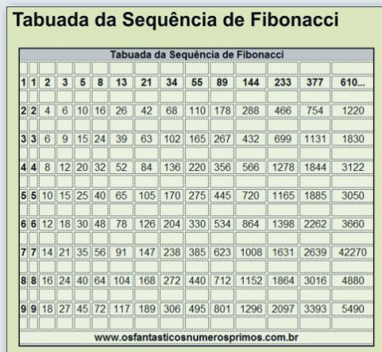

if (condition) true_action
if ("condition is satisfied") {
"do something"
}Estruturas de Controles
Definição
Estruturas de controle são trechos de código que resultam em diferentes desfechos dependendo do resultado da verificação de uma ou mais condições lógicas.
É um processo de tomada de decisão automatizado onde o programa escolhe executar uma instrução ou outra, ou até mesmo nenhuma delas, dependendo do resultado de uma parte anterior do código.
Isso é especialmente útil quando o analista deseja realizar uma tarefa que é diferente dependendo da variável ou da situação.
Existem duas estruturas de controle:
- Condicional: onde uma determinada instrução é executada com base na veracidade de uma condição.
- Loop: repete uma instrução várias vezes
Condicional
A estrutura condicional “if” é uma construção que permite a execução de determinados blocos de código com base na avaliação de uma condição lógica
Essa condição lógica pode ser qualquer expressão que resulte em verdadeiro ou falso.
Se a condição for verdadeira, o bloco de código associado ao “if” é executado; caso contrário, o programa pode optar por executar um bloco de código alternativo, definido pela estrutura “else”
if (condition) true_action else false_action
if("condition is satisfied"){
"do something"
} else {
"otherwise do something else"
}If
conditionisTRUE,true_actioné avaliada;if
conditionisFALSE, a opçãofalse_actioné avaliada.
x = "Leonardo"
if(class(x)=="character"){
cat(" O objeto x=",x,"é da classe character",sep=" ")
} O objeto x= Leonardo é da classe characterx = 1
if(class(x)=="character"){
paste(" O objeto x=",x,"é da classe character",sep=" ")
} else{
paste(" O objeto x=",x," é da classe",class(x),sep=" ")
}[1] " O objeto x= 1 é da classe numeric"- A função
ifelse()permite executar duas instruções com base no resultado de uma condição lógica em uma única linha. A sintaxe para isso é a seguinte:
ifelse(condição, instrução_se_verdadeiro, instrução_se_falso)condição: Uma condição lógica que avalia para TRUE ou FALSE.instrução_se_verdadeiro: A instrução a ser executada se a condição for TRUE.instrução_se_falso: A instrução a ser executada se a condição for FALSE.
x = 1:10
ifelse(x %% 2 == 0, "par", "ímpar") [1] "ímpar" "par" "ímpar" "par" "ímpar" "par" "ímpar" "par" "ímpar"
[10] "par" x = 70
if (x >= 90 & x <= 100) {
"A"
} else if (x >= 80 & x < 90) {
"B"
} else {
"C"
}[1] "C"x = 80
if (x >= 100 | x <= 70) {
"Extremo"
} else {
"Não é extremo"
} [1] "Não é extremo"switch
A função
switchuma construção condicional que permite escolher um valor com base na correspondência de casos.Ela é frequentemente utilizada quando você tem várias opções e deseja realizar diferentes ações dependendo do valor de uma expressão.
É útil quando você tem uma série de casos possíveis e deseja evitar a aninhamento excessivo de instruções
if-else.Torna o código mais limpo e legível, especialmente em situações em que há muitas opções possíveis.
Esse exemplo faz uma correspondência entre o número e o dia da semana
numero = 1
dia <- switch(numero,
"1"="Domingo",
"2"="Segunda-feira",
"3"="Terça-feira",
"4"="Quarta-feira",
"5"="Quinta-feira",
"6"="Sexta-feira",
"7"="Sábado"
)
cat("O dia correspondente ao número", numero, "é", dia, "\n")O dia correspondente ao número 1 é Domingo - Esse exemplo faz uma correspondência entre o número percentual (character) e o número decimal (numeric)
PROP = "25%"
prop <- switch (PROP,
"25%" = 0.25,
"50%" = 0.5,
"75%" = 0.75
)
prop[1] 0.25Loops
- Os loops, ou laços de repetição, são estruturas que permitem executar um bloco de código repetidamente
for
- O loop for é empregado para executar instruções de código repetitivas um número determinado de vezes.
for (variavel in sequencia) {
# código a ser executado em cada iteração
}
#ou
for (variavel in 1:n) { # n = quantidade de iterações
# código a ser executado em cada iteração
}- Ao executar este código, você verá a saída que mostra os quadrados dos números de 1 a 5.
for (i in 1:5) {
quadrado <- i^2
cat("O quadrado de", i, "é", quadrado, "\n")
}O quadrado de 1 é 1
O quadrado de 2 é 4
O quadrado de 3 é 9
O quadrado de 4 é 16
O quadrado de 5 é 25 - Ao executar este código, você obterá a saída mostrando a soma dos primeiros 10 números naturais.
n = 12
soma <- 0
for (i in 1:n) {
soma <- soma + i
}
cat("A soma dos primeiros",n, "números naturais é:", soma, "\n")A soma dos primeiros 12 números naturais é: 78 cumsum(1:n) # forma alternativa [1] 1 3 6 10 15 21 28 36 45 55 66 78- Se quisermos combinar as saídas anteriores em um único vetor x, podemos primeiro iniciar x e depois anexar a saída do loop for a x.
x <- NULL # criando vetor vazio
for(i in 2010:2016) {
output <- paste ("The year is", i)
x <- append(x, output)
}
head(x)[1] "The year is 2010" "The year is 2011" "The year is 2012" "The year is 2013"
[5] "The year is 2014" "The year is 2015"- Sorteio de n números de uma sequência de 1 a N
N = 1000 # número total de elementos 1:N
m = 10 # colunas
n = 500 # linhas ; amostra de tamanho n
matrix_amostra_sorteada = matrix(0,nrow = n,ncol = m) # criando a matriz
media_amostra_sorteada = NULL
set.seed(2) # gerar sempre as mesmas amostras
for(k in 1:m){
x = sample(1:N,n,replace=T) # sorteando n números de uma sequência de 1:N
media_amostra_sorteada = append(media_amostra_sorteada,mean(x))
matrix_amostra_sorteada[,k] <- x # guardando a amostra sorteada na coluna
}
matrix_amostra_sorteada[1:6,1:3] [,1] [,2] [,3]
[1,] 853 239 586
[2,] 975 732 623
[3,] 710 906 488
[4,] 774 59 848
[5,] 416 373 784
[6,] 392 48 57head(media_amostra_sorteada)[1] 523.802 491.546 485.894 503.402 506.608 510.678- Usando a função
replicate()
set.seed(2)
matrix_amostra_sorteada = replicate(m,sample(1:N,n,replace=T))
head( colMeans(matrix_amostra_sorteada) )[1] 523.802 491.546 485.894 503.402 506.608 510.678- Variando dentro do vetor
n = c(10,20,30,40)
for(k in n){
print(2*k)
}[1] 20
[1] 40
[1] 60
[1] 80- Utilizando dois
for
matriz <- matrix(0, nrow = 3, ncol = 3)
# Preencher a matriz com números sequenciais usando um loop for
contador <- 1
for (i in 1:3) {
for (j in 1:3) { # fixa o i e varia o j
matriz[i, j] <- contador
contador <- contador + 1
}
}
matriz [,1] [,2] [,3]
[1,] 1 2 3
[2,] 4 5 6
[3,] 7 8 9while
Os loops while começam testando uma condição. Se for verdadeira, então eles executam a instrução.
Uma vez que a instrução é executada, a condição é testada novamente, e assim por diante, até que a condição seja falsa, momento em que o loop é encerrado.
É considerada uma boa prática incluir um objeto contador para acompanhar o número total de iterações.
contador <- 0
while (condition) {
# código executado enquanto a condição for verdade
# contador <- contador + 1
}O código a seguir irá imprimir o valor de
ienquanto este objeto for menor que 5.Quando a condição não for mais respeitada, o processo será interrompido.
i = 0
while(i<5){
cat(i,"é menor que 5","\n")
i = i+1
}0 é menor que 5
1 é menor que 5
2 é menor que 5
3 é menor que 5
4 é menor que 5 - Lançamento de um dado até que um determinado número seja obtido.
numero_escolhido <- 6
resultado_dado = 1 # iniciar com número diferente do número escolhido
tentativas = 0
while (resultado_dado!=numero_escolhido) {
resultado_dado = sample(1:6,1,replace = T,prob = NULL) # sorteando número de 1 a 6
tentativas = tentativas + 1
cat("Tentativa:",tentativas,"\n","Número do dado é",resultado_dado,"\n")
}Tentativa: 1
Número do dado é 1
Tentativa: 2
Número do dado é 5
Tentativa: 3
Número do dado é 3
Tentativa: 4
Número do dado é 3
Tentativa: 5
Número do dado é 3
Tentativa: 6
Número do dado é 1
Tentativa: 7
Número do dado é 5
Tentativa: 8
Número do dado é 2
Tentativa: 9
Número do dado é 4
Tentativa: 10
Número do dado é 2
Tentativa: 11
Número do dado é 4
Tentativa: 12
Número do dado é 2
Tentativa: 13
Número do dado é 1
Tentativa: 14
Número do dado é 1
Tentativa: 15
Número do dado é 1
Tentativa: 16
Número do dado é 4
Tentativa: 17
Número do dado é 5
Tentativa: 18
Número do dado é 4
Tentativa: 19
Número do dado é 1
Tentativa: 20
Número do dado é 3
Tentativa: 21
Número do dado é 5
Tentativa: 22
Número do dado é 4
Tentativa: 23
Número do dado é 4
Tentativa: 24
Número do dado é 5
Tentativa: 25
Número do dado é 5
Tentativa: 26
Número do dado é 2
Tentativa: 27
Número do dado é 5
Tentativa: 28
Número do dado é 5
Tentativa: 29
Número do dado é 5
Tentativa: 30
Número do dado é 1
Tentativa: 31
Número do dado é 3
Tentativa: 32
Número do dado é 4
Tentativa: 33
Número do dado é 4
Tentativa: 34
Número do dado é 4
Tentativa: 35
Número do dado é 4
Tentativa: 36
Número do dado é 6 - Observação: a diferença principal entre um loop
fore um loopwhileé: um loopforé usado quando o número de iterações que um código deve ser executado é conhecido, enquanto um loopwhileé usado quando o número de iterações não é conhecido.
repeat
Um loop repeat é usado para iterar sobre um bloco de código várias vezes.
Não há uma expressão de teste em um loop repeat para encerrar ou sair do loop.
Em vez disso, devemos colocar uma declaração de condição explicitamente dentro do corpo do loop e usar a função break para sair do loop. Não fazer isso resultará em um loop infinito.
A ideia é repetir um loop e parar quando a condição for satisfeita, para isso será utiliza a função
break
contador = 1
repeat {
# código será executado repetidamente
if (condition) {
break # se a condição for satisfeita, para a repetição
}
contador = contador+1
}Rode esse código no seu computador
Avaliar como o tamanho da amostra afeta a média amostral
N = 1000
populacao = runif(N, 0, 100) # gerar N números entre 0 e 100
head(populacao)
(media.populacao = mean(populacao))
n = 5 # tamanho da amostra inicial
repeat {
amostra = sample(populacao, n, replace = T) # sorteando n observações da população
media.amostra = mean(amostra)
if (abs(media.amostra - media.populacao) < 0.01) {
n = 2 * n
cat("n=", n, "\n", "Media amostral=", media.amostra, "\n")
break
}
n = 2 * n
cat("n=", n, "\n", "Media amostral=", media.amostra, "\n")
}next
É útil quando queremos pular a iteração atual de um loop sem terminá-lo.
Ao encontrar next, o analisador R pula a avaliação adicional e inicia a próxima iteração do loop.
x <- 1:5
for (i in x) {
if (i == 3){
next
}
print (i)
}[1] 1
[1] 2
[1] 4
[1] 5break para sair do Loop
A função
breaké usada para sair imediatamente de um loop, independentemente da iteração em que o loop possa estar.As funções
breakgeralmente estão embutidas em uma declaração if, na qual uma condição é avaliada: se for VERDADEIRA, sai do loop; se for FALSA, continua com o loop.Em uma situação de looping aninhado, onde há um loop dentro de outro loop, essa declaração sai do loop mais interno que está sendo avaliado.
x <- 1:5
for (i in x) {
if (i == 3){
break
}
print (i)
}[1] 1
[1] 2Atividades
Considere:
Gere número de -100 a 100. Pode usar a função
seqourunif(200,-100,100)Selecione $n=100$ da sequência
Conte quantos são negativos e quantos são positivos
Abaixo está a tabuada da sequência de Fibonnacci até 9. Construa um códido para reproduzi-lá.
Considere o seguinte jogo (lançar moeda):
Jogador 1: escolhe cara
Jogador 2: escolhe coroa
Jogue a moeda
Se a moeda for cara, o jogador 1 ganha um ponto. O mesmo para o jogador 2
Vence que fizer 20 pontos primeiro